2016-03-31 - Nº 48

Editorial
Aqui está a Newsletter Nº 48 no seu formato habitual. Agora às quintas-feiras. Se gostar da Newsletter partilhe-a!
Todas as Newsletters encontram-se indexadas no link.
Esta Newsletter tem os seguintes tópicos:
Esta semana a Microsoft, na sua conferencia Build'16, apresentou um protótipo da shell bash a correr nativamente em Windows. Em conjunto com a Canonical, empresa que nos trás o Ubuntu foi apresentado este Demo que poderá mudar a forma como olhamos para o Windows e com as suas possibilidades de correr nativamente binários de Ubuntu. O Laboratório Lawrence Livermore em conjunto com a IBM apresentaram um chip designado por TrueNorth que é baseado em neuro-sinapses. Esta plataforma escalável irá processar o equivalente a 16 milhões de neurónios e consumir o equivalente a uma bateria de um auricular - cerca de 2.5W. Foi esta semana também apresentado um PULPino - trata-se de um processador open-source que irá permitir no futuro o desenvolvimento de dispositivos electrónicos utilizáveis, por parte de universidades e de pequenas empresas. Ainda esta semana ficámos a conhecer um pantógrafo voador desenvolvido pelo MIT.
Na Newsletter desta semana apresentamos diversos projetos de maker e na rubrica "Documentação" apresentamos quatro livros (eBooks) que podem ser descarregados livremente e que esta semana são sobre C funcional, fundamentos de mecânica quântica, desenho de chips analógicos, projectos de chips digitais e a ligação perdida - uma introdução ao desenvolvimento para Web e programação. Falamos ainda sobre as revistas PROGRAMAR - edição 52 e MagPI 44.
Lembramos que no próximo sábado, dia 2 de Abril vamos participar no Dia do Arduino e estão todos convidados para aparecer nas nossas instalações para o Open Day.
 João Alves ([email protected])
João Alves ([email protected])
O conteúdo da Newsletter encontra-se sob a licença  Creative Commons Attribution-NonCommercial-ShareAlike 4.0 International License.
Creative Commons Attribution-NonCommercial-ShareAlike 4.0 International License.
Novidades da Semana ^
Ubuntu on Windows — The Ubuntu Userspace for Windows Developers
"That’s perhaps a bit odd for me, as I hadn’t used Windows in nearly 16 years. But that changed a few months ago, as I embarked on a super secret (and totally mind boggling!) project between Microsoft and Canonical, as unveiled today in a demo during Kevin Gallo‘s opening keynote of the Build conference…. An Ubuntu user space and bash shell, running natively in a Windows 10 cmd.exe console!"
Lawrence Livermore and IBM collaborate to build new brain-inspired supercomputer
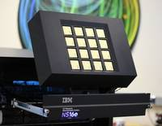
"Lawrence Livermore National Laboratory (LLNL) today announced it will receive a first-of-a-kind brain-inspired supercomputing platform for deep learning developed by (link is external)IBM Research (link is external). Based on a breakthrough neurosynaptic computer chip called IBM TrueNorth, the scalable platform will process the equivalent of 16 million neurons and 4 billion synapses and consume the energy equivalent of a hearing aid battery – a mere 2.5 watts of power. The brain-like, neural network design of the IBM Neuromorphic System is able to infer complex cognitive tasks such as pattern recognition and integrated sensory processing far more efficiently than conventional chips."
-
"In future, it will be easier and cheaper for developers at universities and SMEs to build wearable microelectronic devices and chips for the Internet of Things, thanks to the PULPino open-source processor, which has been developed at ETH Zurich and the University of Bologna. Software source codes and hardware designs tend to be closely guarded trade secrets. Not so with open-source products. For instance, the code of open-source software is freely available to all: the best known example is the Linux operating system. Not only are interested developers able to use the software, they can also further develop it and adapt it to their own needs."
A flying pantograph - human and machine creativity in balance
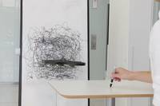
"We explore an art form where machines take essential role in aesthetics and processes of the creation. Our main theme can be summarized as “body, hybrid, and “evolve” - as we study an artistic medium that incorporates mechanical machines that institutes a hybrid creation process as well as an expressive capacity beyond body limits."
Ciência e Tecnologia ^
Graphene aids lens technology breakthrough
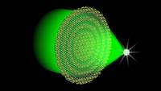
"A flat optical lens just a billionth of a metre thick will let us see living creatures as small as a single bacterium better than ever before. The new lens, developed by researchers at Swinburne University of Technology, promises to revolutionise much of the technology around us. Driven by developments in photonic chips and nano-optics, the global race to create a practical ultrathin lens that breaks the diffraction limit — enabling a focus less than half the wavelength of light — had been gathering pace since the turn of the millennium."
World's first 'robot run' farm to open in Japan
"A Japanese firm said Monday it would open the world's first fully automated farm with robots handling almost every step of the process, from watering seedlings to harvesting crops. Kyoto-based Spread said the indoor grow house will start operating by the middle of 2017 and produce 30,000 heads of lettuce a day. It hopes to boost that figure to half a million lettuce heads daily within five years. The farm, measuring about 4,400 square metres (47,300 square feet), will have floor-to-ceiling shelves where the produce is grown."
This Simple Black Film Made From Carbon Nanotubes Is Stronger Than Kevlar
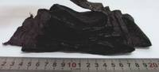
"This looks like the kind of thin material you might make a trash bag out of. But that would be a waste because this material, made from carbon nanotubes, is stronger and more compliant than kevlar or carbon fiber. Carbon nanotubes have been an exciting prospect in material science for years now: At the microscopic level, they’re super strong and stretchy. But when you make a bulk material out of them, their properties are watered down because they become randomly arranged—and they need to lie in parallel to make the most of their strength. Now, a team of researchers from the East China University of Science & Technology have developed a way to create films where nanotubes are neatly aligned."
Wendelstein 7-X produces first hydrogen plasma
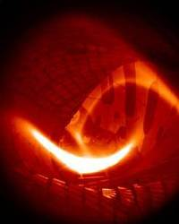
"In a bid to advance plasma research, Federal Chancellor Angela Merkel actually pushed some buttons herself: on February 3, 2016, Merkel, during a visit to the Wendelstein X-7 experimental fusion reactor at the Max Planck Institute of Plasma Physics (IPP) in Greifswald, personally flipped the switch to generate the machine’s first hydrogen plasma. "This marks the beginning of an experiment unique in the world, which can bring us one step closer to the energy source of the future," the Chancellor said. Wendelstein 7-X, fired up in early December 2015 using helium; now it has started its experimental scientific operation. With Wendelstein 7-X, the world’s largest and most advanced fusion device of the stellarator type, researchers want to investigate this configuration’s suitability for use in a power plant. "For the Max Planck Society, the operational start of Wendelstein-7X is a milestone in its own history", said Martin Stratmann, President of the Max Planck Society. Stratamnn went on to thank the Institute’s researchers: "You have achieved a true milestone in plasma physics and technical engineering on the road towards a sustainable energy supply in the 21st century.""
Researchers Discover New Phase of Boron Nitride and a New Way to Create Pure c-BN
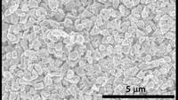
"Researchers at North Carolina State University have discovered a new phase of the material boron nitride (Q-BN), which has potential applications for both manufacturing tools and electronic displays. The researchers have also developed a new technique for creating cubic boron nitride (c-BN) at ambient temperatures and air pressure, which has a suite of applications, including the development of advanced power grid technologies."
-
"Do you like pizza? Would you consider yourself a boat enthusiast, a landlubber or none of the above? Does comedian Adam Sandler make you laugh or make you cringe? Your responses to certain stimuli — foods, celebrities, words, seafaring vessels, you name it — might seem trivial, but they say a lot about you. In fact (with the proper clearance), these responses could gain you access into restricted areas of the Pentagon. A new technology developed at Binghamton University can identify you simply by measuring your brain’s response to different stimuli. The technology has garnered attention from media outlets around the world, including National Geographic, which spent a day interviewing and filming on campus. It’s called brainprint, and it could revolutionize the security industry."
Documentação ^
A documentação é parte essencial do processo de aprendizagem e a Internet além de artigos interessantes de explorar também tem alguma documentação em formato PDF interessante de ler. Todos os links aqui apresentados são para conteúdo disponibilizado livremente pelo editor do livro.
Livros
-
"Functional C teaches how to program in C, assuming that the student has already learnt how to formulate algorithms in a functional style. By using this as a starting point, the student will become a better C programmer, capable of writing programs that are easier to comprehend, maintain and that avoid common errors and pitfalls. All program code that appears in Functional C is available on our ftp server - see below. How to find a code fragment? "
Foundations of Quantum Mechanics
"An Introduction to the Physical Background and Mathematical Structure"
-
"A comprehensive introduction to CMOS and bipolar analog IC design. The book presumes no prior knowledge of linear design, making it comprehensible to engineers with a non-analog background. The emphasis is on practical design, covering the entire field with hundreds of examples to explain the choices. Concepts are presented following the history of their discovery."
Microelectronic Devices and Circuits - 2006 Electronic Edition
"Combining semiconductor device physics and modeling with electronic circuit analysis and practice in a single sophomore/junior level microelectronics course, this textbook offers an integrated approach so students can truly understand the interaction between semiconductor physics, device structure, and integrated circuit design and operation. The balanced, modular treatments of bipolar and MOS devices, and of analog and digital circuits can be easily adapted to a particular instructor or class’s needs. SPICE models, MESFET’s, optoelectronic devices, worked examples, and end-of-the-chapter problems further enhance the text."
Digital Circuit Projects: An Overview of Digital Circuits Through Implementing Integrated Circuits
"Digital circuits, often called Integrated Circuits or ICs, are the central building blocks of a Central Processing Unit (CPU). To understand how a computer works, it is essential to understand the digital circuits which make up the CPU. This text introduces the most important of these digital circuits; adders, decoders, multiplexers, D flip-flops, and simple state machines."
The Missing Link: An Introduction to Web Development and Programming
"Web development is an evolving amalgamation of languages that work in concert to receive, modify, and deliver information between parties using the Internet as a mechanism of delivery. While it is easy to describe conceptually, implementation is accompanied by an overwhelming variety of languages, platforms, templates, frameworks, guidelines, and standards. Navigating a project from concept to completion often requires more than mastery of one or two complementing languages, meaning today’s developers need both breadth, and depth, of knowledge to be effective."
Revistas
-
"A Revista PROGRAMAR está de volta com mais uma edição. Desta vez temos como tema de capa o artigo Testar aplicações móveis com Xamarin Test Cloud, da autoria de Sara Silva. Adicionalmente, nesta edição poderá encontrar mais 14 artigos, que listamos de seguida: Extrair dados do cartão de cidadão (Ricardo Cabral); Android Monkey Test: Um “Macaco” ao Serviço dos Programadores Android(Nuno Santos); Programação (in)Segura – Transbordo de Memória (Patrício Domingues, Vítor Távora); ELM (Ricardo Miranda); Automação com Genuino (António Santos, Rita Peres); O papel do profissional de Marketing & Comunicação no sector das TIs em Portugal (Ana Rita Queiroz); Análise do livro Javascript 6 (Tânia Valente); Análise do livro Modelação de dados em UML – Uma Abordagem por Problemas (Ricardo Peres); O que esconde o CQRS (Guilherme Ferreira); Comunidades e Voluntariado Presencial (Ricardo Cabral); Shift Appens 2016 – Coimbra (Rita Peres); Raspberry Pi 3 Model B (Rita Peres); Windows 10: Gestão de redes wireless através da linha de comandos (Nuno Silva); Projecto em destaque na comunidade P@P: Matraquilhos (António Santos)"
-
"The theme for this issue (and wonderfully realised by Raspberry Pi’s resident illustrator-extraordinaire Sam Alder) is ways to improve and automate your life with Raspberry Pi. We’ve put together five fun projects to help you power up your life including an automatic pet feeder, a magic mirror and a temperature-sensing kettle so your tea (Earl Grey) is always served hot. Power up your life with Raspberry Pi - Five fun projects to help you improve and automate your world; Bluetooth audio guide - Turn your Pi 3 into a music streamer; Retro vision with Pi Zero - Use an old TV with your new Pi Zero; What is pressure? - Find out by doing science with the Sense HAT; And much, much more!"
Modelos 3D ^
Com a disponibilidade de ferramentas que permitem dar azo a nossa imaginação na criação de peças 3D e espaços como o thingiverse para as publicar, esta rubrica apresenta alguns modelos selecionados que poderão ser úteis.
Hyperboloid pen holder
Holds 16 pencils that have diameter up to 8 mm. You might want to scale the STL model up if you need larger holes!
If you edit the parameters like pen angle or increase the amount of pens, be careful! The pencils might intersect if the azimuth is too dramatic.
Tool Kit V2
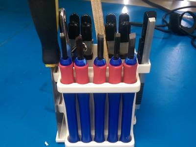
In my line of work I come in contact with many 3D printers of all sorts and I have to have the right tools for each machine. That totals up to a rather large tool chest I have to carry around (about 20lbs of tools), So to combat this I decided to take the few tools I use daily and make a small kit for those.
What this kit holds: Spatula (With two magnets to hold it in place) Box cutting knife 5 chisels
Open space for a variety of tools depending on the flavor of the week printers. Filament cutters Adjustable Wrench Screwdrivers Ect.
Magnets used: http://www.rare-earth-magnets.com/magcraft-nsn0834 These are an almost perfect slip fit and will not back out.
Enclosure With Screw Stand-offs
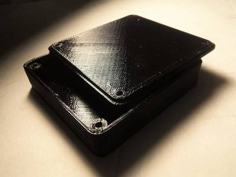
Here is a customizable enclosure that includes screw stand-offs and counter-sunk holes in the lid. The parameters for height, width and depth are all external dimensions, so to figure out your internal dimensions you will have to account for the thickness as well.
Tip: Once you have the STL for the size of the enclosure you want, import that into TinkerCAD and use "hole" objects to "cut" openings into the enclosure before you print it. With careful measuring and planning, you can save yourself the trouble of having to do it Post-Printing.
Projetos Maker ^
Diversos Projetos interessantes.
Creating an Arduino-Powered Foosball Scoreboard
"Recently, weve added a foosball table to our break room in our technology office based in Omsk, Russia. The game got popular quickly and became a regular routine during lunch and breaks. People were lining up to get a charge of positive emotions! Since usability of the hand scoreboards left something to be desired and intense games made it difficult to remember to update the score, we decided to make the scoreboard automatic."
Arduino Project - Bluetooth powered Wearable Electonic Stethoscope Part I
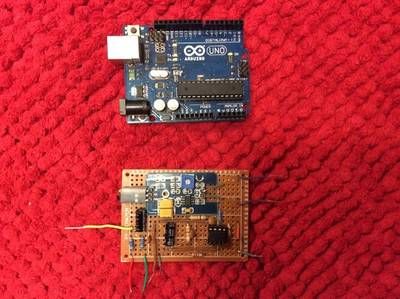
"This project aims at designing a wearable digital stethoscope which is able to do a long-distance monitoring especially for the patient suffering from chronic diseases. The stethoscope supports the transmission of data to personal computer through wireless transmitter, after which the signal received can be stored up and be replayed back to physicians for later diagnosis. This project will also give a brief idea on self-screening property for the newly designed stethoscope for auto disease preliminary assessment."
2euro Arduino board or USBASP 2.0 Firmware Hack
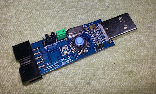
"In Ebay.de you get a fabulous 2.30 for ISP programming interface , though need about 3 weeks delivery time but that is the amount not so crucial. On the small board is a Atmega8 2 Led's, an external 12MHz crystal, an ISP connection, a USB connection and a 3.3V level converter. "
-
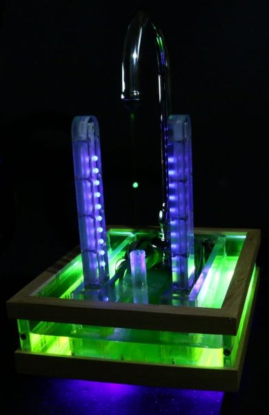
"I'm sure that most of you are familiar with the stroboscopic effect. To paraphrase wisegeek, it is a phenomenon of human visual perception in which motion is shown to be interpreted by a brain that receives successive discreet images and stitches them together with automatic aliases for temporal continuity. In short, motion is an artifact. A conventional strobe fountain is a stream of water droplets falling at regular intervals lit with a strobe light. When viewed under normal light, it is a normal water fountain. When viewed under a strobe light with its frequency tuned to the rate at which the droplets fall, the droplets appear to be suspended in mid-air. Adjusting the strobe frequency can make the droplets seemingly move slowly up or down. However making water droplets fall at regular intervals isn't as easy as it sounds as many physical effects will get in the way of doing so (the main one being surface tension). For this project to work I'm instead detecting droplets with a laser and flashing a light accordingly."
Arduino + nRF24L01: Simple bidirectional wireless communication
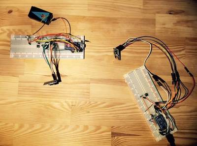
"With this project I wanted to establish bidirectional communication between two circuits. To do so, I used the nRF24L01, which is ultra low power transciever that operates at about 2,4 GHz."
Control a Solenoid With Arduino
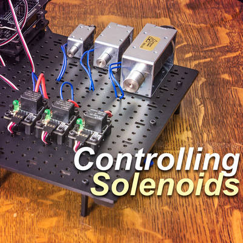
"This Arduino Solenoid Tutorial shows how to control a solenoid using pushbuttons and a relay with your Arduino compatible controller. Solenoids are electromagnetically driven actuators. When voltage is applied to the solenoid coil the electromagnetic force pulls the center plunger in. It is an excellent mechanical solution for all kinds of DIY projects requiring short quick linear actuation. Solenoids are most often found in latching and trigger-like mechanisms, such as door locking systems, paintball guns, pinball machines, dot matrix printers, and fuel injectors. Let's get started."
Fencomat - Arduino based fencing trainer
"The second two apes started fighting with sticks tying to poke each other - fencing was born. Some hundred thousand years later we are using the same concept embedded in the concept of sports. Which makes each fight fair and their fore more exciting. The flexible blade of the epee measures 90 cm from the bell to the tip. The tip actually is a switch. That indicates a hit when a force of 750 grams ( or 7,4 Newton) applied. The entire body acts as valid target area - even the hand holding the weapon. And can be hit at any time during a fight. To be able to score accuracy and speed are two key features."
-
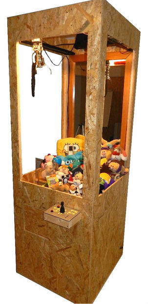
"Claw machines are fascinating for many people. Did you ever want to build your own? I did, so I just built my own. You can do the same, if you have some skills in electronics and working with wood etc and if you are creative! Watch the video to see what i built."
-
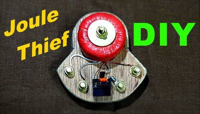
"A joule thief is a minimalist Armstrong self-oscillating voltage booster that is small, low-cost, and easy to build, typically used for driving light loads. It can use nearly all of the energy in a single-cell electric battery, even far below the voltage where other circuits consider the battery fully discharged; hence the name, which suggests the notion that the circuit is stealing energy or "joules" from the source. The term is a pun on the expression "jewel thief": one who steals jewelry or gemstones."
-
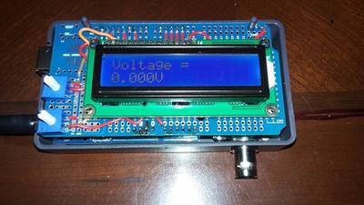
"This project lets you manipulate the input of voltage from an Arduino microcontroller so that you enjoy of a power supply from 0 - 5 Volts."
AC Motor Speed Controller using U2008B
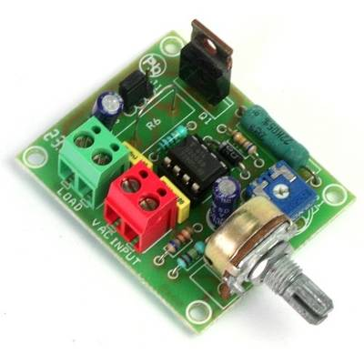
"This low cost current feedback phase control AC motor driver based on U2008 IC, The U2008B is designed as a phase control circuit in bipolar technology. It enables load-current detection as well as mains-compensated phase control. Motor control with load-current feedback and overload protection are preferred application."
Cartesio low cost cartesian plotter robot
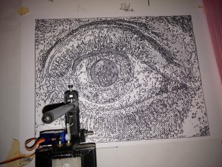
"Recently the famous site evilmadscientist introduced the new art robot called Axidraw.I saw the robot in action and it is very similar to the robot I built in the 2015, called Cartesio, a 3d printed cartesian robot. So, I decided to publish in open source all the details about Cartesio."
Mage dice tower: Lasercut and 3D Printed
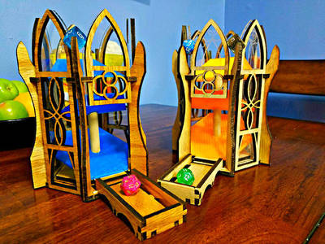
"We play a lot of board games around my house, and if you have kids, then you know what it's like to be fetching dice off the floor every few turns. So a few months back, my girlfriend and I started looking into dice towers in order to keep the dice from flying across the room. I took note of different features like size, portability and level of complexity; yet they all seemed to look the same after a while. We never did find one that seemed like it really fit the bill, so that's when we decided to make our own."
-
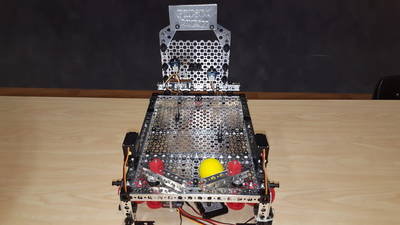
"Pinball machine with Radio Controlled flippers and Arduino controlled LED's triggered by a Grove Ultrasonic sensor aimed at the bumper pins"
Super simple Raspberry Pi 433MHz home automation
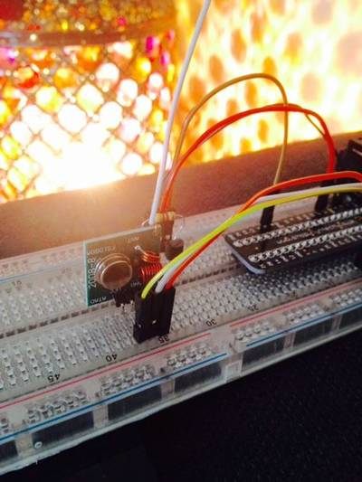
"This tutorial is one among many when it comes to using a Raspberry Pi to control wireless devices around the home. Like many others, it will show you how to use a cheap transmitter/receiver pair hooked up to your Pi to interact with devices operating on the commonly used 433MHz radio frequency band. It will specifically show you how to turn any electrical device on or off using your Pi by transmitting commands to a set of 433MHz remote-controlled power sockets."
-
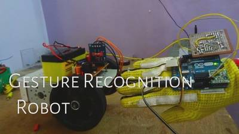
"Tired of controlling your robot with joystick?.Ever thought of controlling it with your hands.Wished I could control everything with my hands.Sitting in chair and controlling things like a BOSS . I loved it.So I finally came out with a cool DIY hand gesture recognition robot, which can follows the commands shown by hand. Sounds crazy but I promise its very simple.Making a gesture control robot is actually very simple. "
-
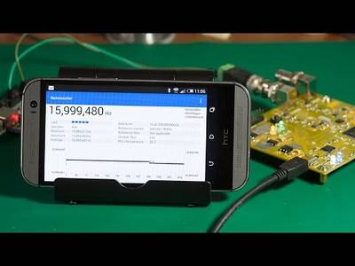
"An accurate frequency counter using an FPGA, STM32 and a bluetooth android app. Here we have a good example of how a requirement for a simple tool spirals out of control and spawns a project that takes months to complete and ends up dwarfing the project that it was originally expected to facilitate. You see, some time ago I was fiddling around with a project, something to do with data logging, probably, Ive actually forgotten what I was up to."
Dual DC Motor driver using two L293D
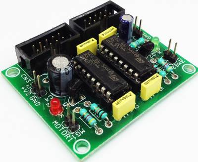
"Dual DC Motor driver using two L293D IC. The L293D device is quadruple high-current half-H driver. The 293D is designed to provide bidirectional drive current up to 600mA a voltage from 5V to 36V. It provides 600mA +600mA on each channel suitable for mini hobby robots. The board been designed mainly for small size robot, however this can be used for other application where two motor control required. L293D includes the output clamping diodes for protections. Each channel required two input signals PWM and DIR for full control. Separate logic supply to reduce dissipation."
-
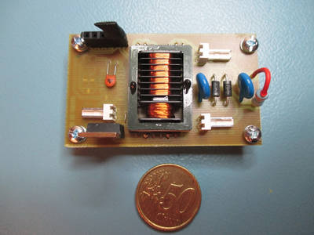
"Currently I'm working on a device to electrocute home insects like cockroaches, progress is small because they are smarter than I thought, but that's a different story. For that project I had to find a source of sufficient high voltage and output power. Presented in previous post 5V/400V converter had insufficient voltage and power, another option, flyback transformer was too dangerous to be used here."
-
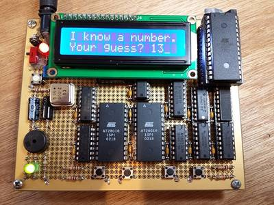
"Nibbler is a 4 bit CPU built from standard 7400 series logic chips individual counters, registers, buffers, and gates. Its an educational example of a simple CPU thats easy to understand and build, but still capable of running games and other interesting programs. Nibbler is built using wire-wrapping on a 5 x 4 inch (127 x 102 mm) perfboard. The CPU contains 17 chips in total."
-
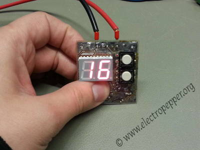
"This is a simple digital counter with a serial rs-232 and a 7 segment display, i started this project to count items on some shelfs, but it can be used for anything, it is also, for the exception of the connectors, completely on SMD components."
EmotionBox - make long-distance relations less distant
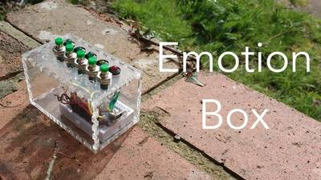
"Hi everyone, nowadays there are a myriad ways to instantaneously communicate with our loved ones, even across great distances: instant messaging, email, video calls, social networks... There is, however, one thing that is missing from long-distance relationships: tangible and physical communication, everything is inside our screens or mobile phones. EmotionBox was conceived as a way to mitigate this."
-
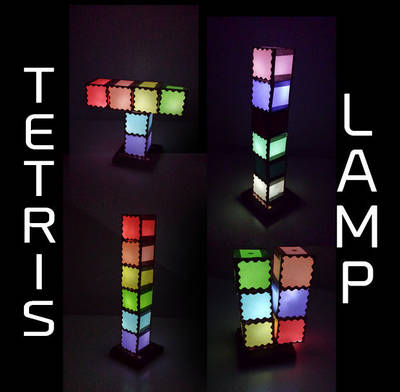
"This was an idea occupying my sketchbook for a while: a modular lamp whose units would light up upon contact with one another."
1inch 100W HOT-PLATE FOR SMT REFLOW
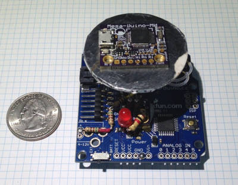
"Black Mesa Labs has been using a $20 hot plate for a year now for soldering QFN ICs to PCBs. Only issue so far has been the size ( 10?x10?x3? ) and thermal mass of the thing as it consumes precious microscope work area and unfortunately stays quite hot for 30+ minutes after a quick 4 minute reflow job. BML boards are mostly 1?x1?, so a 800W hot plate with a 6? diameter heating surface is overkill for most jobs."
-
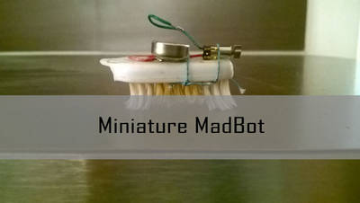
"In this project we can use useless phone and some handy things to make a MadBot which moves like mad and it is small in size."
Arduino safe without any servo or motor shield
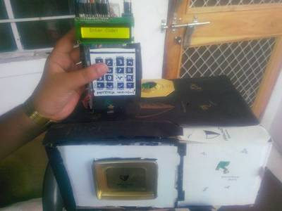
"In this instructable i will teach you how to make a very cheap arduino safe without any servo or motor shield and it also displays the password on LCD and it is wireless too."
That's all Folks!